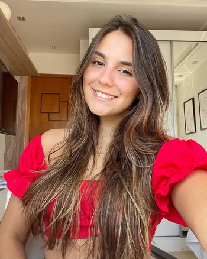
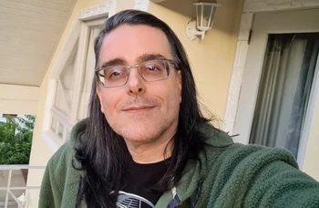

Os seus maiores sucessos são as personagens Ladybug (As aventuras de Ladybug) e Lindinha (Meninas Super Poderosas - 2016).
Jéssica também possui um canal de youtube “Dublalá”com mais de 45 mil inscritos e 1 milhão de visualizações!
Fabrício Vila Verde é um dublador carioca que começou sua carreira artística aos 7 anos de idade.
Após um período dedicado ao teatro e participações em novelas, foi aos 10 anos que Fabrício se apaixonou pela dublagem.

Isabelle Cunha começou sua carreira quando ainda era criança, onde com seus 7 anos de idade, já atuava em peças teatrais. Em 2013, aos 10 anos de idade, iniciou seus trabalhos na dublagem sendo uma das mais jovens e talentosas dubladoras do Brasil já tendo emprestado sua voz para personagens como: Onze – Stranger Things (Netflix), Janet – Invocação do Mal 2 e Tikki: Miraculous As Aventuras de Ladybug (Gloob). Nascida durante a expansão do mundo digital, Isabelle acompanhou o surgimento dos youtubers e também mergulhou nessa paixão, além de canal no YouTube, perfil no instagram com mais de 266 mil seguidores e um perfil no Tiktok com mais de 2 milhões de seguidores.
Luiz Sérgio Vieira (Rio de Janeiro, 22 de maio de 1979) é um ator, dublador, cantor e músico brasileiro.

Guilherme Neves Briggs (Rio de Janeiro, 25 de julho de 1970) é um ator, dublador, diretor de dublagem, locutor, tradutor, desenhista, youtuber e blogueiro brasileiro. É casado desde 2003 com a roteirista de histórias em quadrinhos Fran Briggs. Tem como gostos pessoais ciência, livros, ilustração, filmes, séries de televisão, desenhos animados e histórias em quadrinhos, particulamente animes e mangás, especialmente os animes Maison Ikkoku e Berserk. Considera como personagem preferido por ele dublado Dagget, de Os Castores Pirados.
